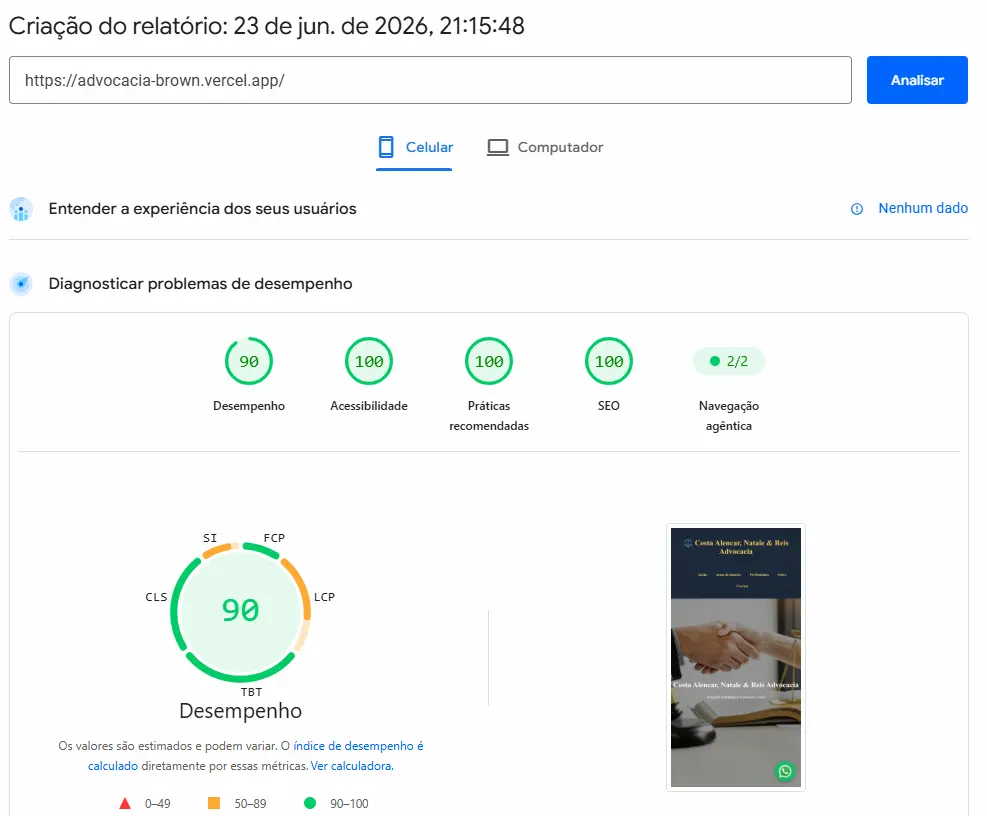

Muitas agências especializadas entregam sites institucionais impecáveis visualmente. Elas dominam jargões complexos como "Design e UX/UI Disruptivo", "SEO Omnichannel" ou "Mindset de Conversão" — termos técnicos que a maioria dos empresários aceita por não saber exatamente o que significam. O problema é que, por trás das telas bonitas, o que elas escondem a sete chaves é o relatório de desempenho real do Google.
As agências de nicho adoram escala, não performance.
A grande maioria dessas agências especializadas utiliza modelos industriais em WordPress com Elementor ou criadores engessados. Elas entregam layouts bonitos visualmente, mas tecnicamente quebrados por dentro. São ótimas em fornecer um produto esteticamente agradável, mas deixam drasticamente a desejar na engenharia de software, criando um código inflado, cheio de plugins pesados e lentos.
A Ilusão dos Jargões e o Prejuízo Oculto no Google Ads
Muitas empresas vendem pacotes caros de otimização (SEO), prometendo o topo do Google. No entanto, o algoritmo do Google é puramente matemático: a velocidade e a estabilidade da página são fatores cruciais de ranqueamento.
Quando a engenharia por trás da tela é uma "carroça", o Google penaliza o site, jogando-o para o fundo das buscas orgânicas. Para compensar essa falta de acessos, o empresário acaba sendo obrigado a gastar muito mais com anúncios pagos (Google Ads). Como o site demora para carregar, o cliente clica no anúncio, o dinheiro é consumido, mas ele desiste antes mesmo de a página abrir. Na prática, isso significa dinheiro jogado no lixo.
Para ilustrar essa realidade com dados científicos, realizei um estudo comparativo utilizando o PageSpeed Insights (a ferramenta oficial de auditoria do Google), confrontando um site jurídico padrão de mercado com as técnicas de alta engenharia que aplico nos meus projetos:
| Métrica Oficial do Google (Mobile) | Padrão Comum de Agência | Nosso Padrão de Engenharia |
|---|---|---|
| Nota de Desempenho Geral | 48 (Zona de Risco) | 90 (Zona de Elite) |
| SEO, Acessibilidade e Boas Práticas | 85 / 86 / 58 | 100 / 100 / 100 (Máxima) |
| Tempo de Carregamento (Speed Index) | 8,7 segundos | 4,0 segundos |
| Primeiro Impacto Visual (FCP) | 3,0 segundos | 0,8 segundos (Instantâneo) |
| Layout pulando na tela (CLS) | 0.374 (Instável) | 0 (Estabilidade Perfeita) |
Agora, olhe o print do teste do nosso último projeto. 📊

A Diferença Entre "Tela Bonita" e Alta Engenharia
O site auditado na coluna da esquerda amarga os 48 pontos porque força o celular do visitante a baixar mídias brutas e pesadas, além de carecer de otimização estrutural. Enquanto a página tenta carregar, os elements ficam pulando e desalinhando na tela (CLS de 0.374), gerando uma experiência irritante que afasta o cliente antes mesmo de ele falar com a sua equipe.
No projeto de alta performance (coluna da direita), o cenário é totalmente oposto. Aplicando técnicas avançadas de desenvolvimento — como compressão matemática de imagens para o formato de última geração WebP, lógicas estruturais de Lazy Loading (onde o site só baixa os recursos sob real necessidade de exibição) e blindagem do caminho crítico da rede —, o site abre de forma instantânea e com zero travamentos.
"Seu site institucional não é apenas um cartão de visitas bonito; ele deve ser uma máquina de aquisição de clientes. E máquina travada não gera receita."
Não Compre Jargões. Exija Resultados Científicos.
Eu não vendo apenas telas atraentes, eu entrego engenharia focada no crescimento e no lucro do seu negócio. O objetivo principal é garantir que a estrutura digital da sua empresa abra instantaneamente, passe autoridade máxima ao visitante e seja priorizada pelos motores de busca do Google. Sem blá-blá-blá comercial ou filtros agenciados.
Transparência e Alta Performance
Quer saber a real nota de velocidade e integridade do seu site atual hoje, com base nos critérios científicos do Google? Desenvolvemos projetos sob medida a partir de R$ 1.500,00. Fale diretamente comigo.